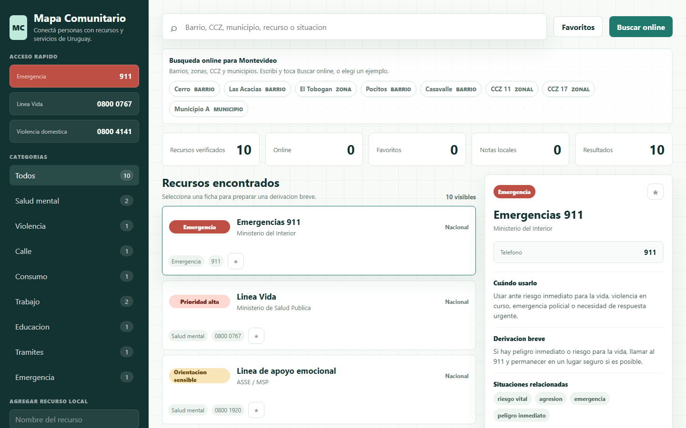

Impacto públicoUruguay
Mapa Comunitario
Directorio abierto para conectar personas con recursos de salud mental, apoyo social, educación, trabajo y emergencias. Cada ficha prioriza fuente y fecha de verificación.